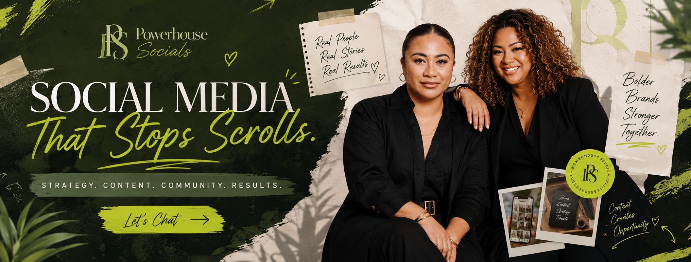
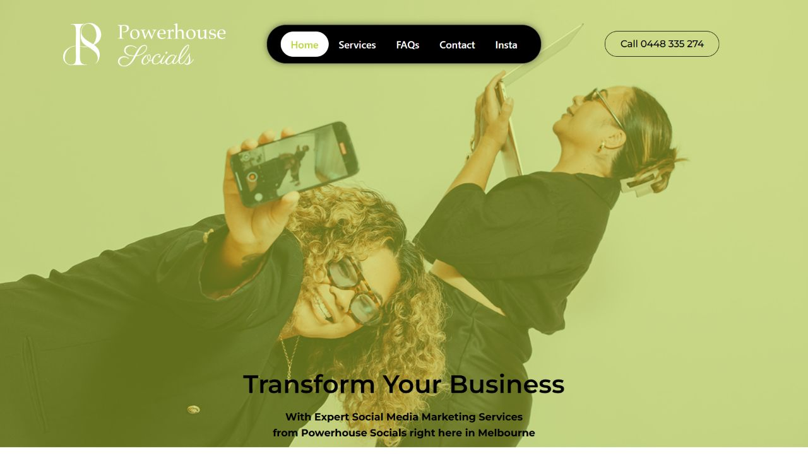
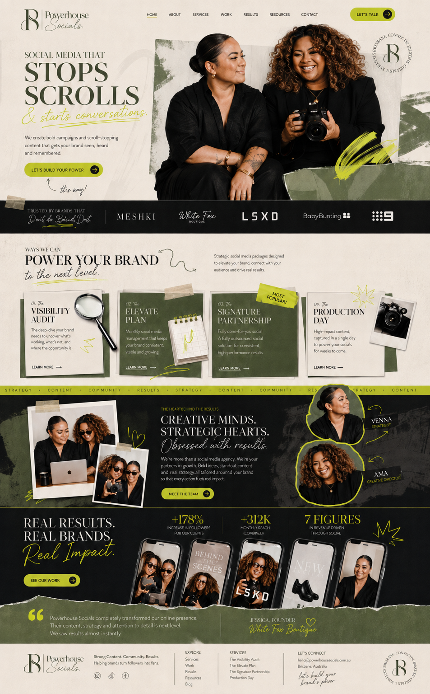
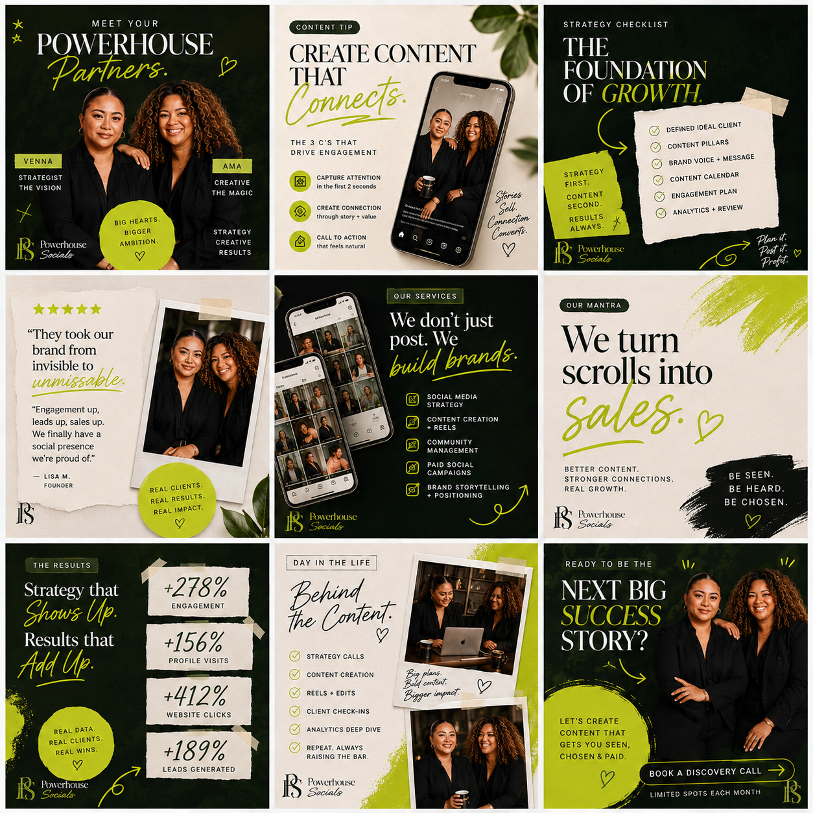

Make the team-led personality unmistakable
Carry the recognisable team presence, confident typography and bold palette through the whole journey, not only the opening moment.
A digital presence concept for Powerhouse Socials
I explored how Powerhouse Socials could bring its team-led personality, four service pathways and strategy-first approach into one connected website and social experience.
Private concept · created for your team

01 / Current → proposed
The current homepage already puts the Powerhouse Socials team and brand energy front and centre. The proposed direction carries that recognisable presence into a more editorial journey with clearer service choices, richer proof moments and consistent calls to action.


02 / Opportunities I noticed
These ideas are grounded in the current Powerhouse Socials website and service structure—not assumptions about internal performance.
Carry the recognisable team presence, confident typography and bold palette through the whole journey, not only the opening moment.
Present the Visibility Audit, Elevate Plan, Signature Partnership and Production Day as four clear pathways with one useful next step.
Give content examples a prominent role so prospects can quickly connect strategy, filming and editing services with the creative output.
Use consistent, low-friction CTA language across the website and social touchpoints, whether someone arrives from search, social or referral.
Observed from the official homepage, services page and contact page.
03 / Why the website matters
A cohesive visual system helps visitors quickly recognise the same brand quality they see across social content.
Clear pathways give prospective clients useful context before they reach out, making the first conversation more focused.
A deliberate mobile journey keeps key messages, examples and actions easy to use where many social visitors first arrive.
Services, team perspective, work and contact options can reinforce each other instead of asking visitors to piece the story together.
A distinctive experience makes the brand easier to remember and gives its creative point of view room to lead.
Focused landing journeys give future organic and paid campaigns a clearer destination aligned with their message.
04 / Website concept
Editorial scale, team-led imagery and lime accents create momentum, while the page structure turns the four service pathways into an easy, memorable journey.
07 / What this could become
A distinctive, responsive home for the offer, team, work and enquiry journey.
A recognisable content system that balances education, personality, proof and action.
Consistent business information and landing experiences that support Melbourne discovery.
Focused campaign destinations aligned to individual services and audience needs.
A flexible foundation that can evolve as services, proof and campaigns develop.
08 / Why I created this
I came across Powerhouse Socials and saw a team with a distinctive visual presence and a clear range of ways to support business owners.
This concept is my way of showing—not only telling—how Synca could help bring that energy into one connected website and social journey. It’s an unsolicited idea, created with care and without any expectation.
Lee — Synca
If this direction feels interesting
I’d be glad to walk your team through the thinking, hear what you’re planning next, and explore whether any part of the concept could be useful.
05 / Social media direction
A feed with a clear point of view.
The supplied social direction combines team personality, practical education, service clarity and direct invitations—giving the brand a recognisable rhythm without making every post feel the same.
